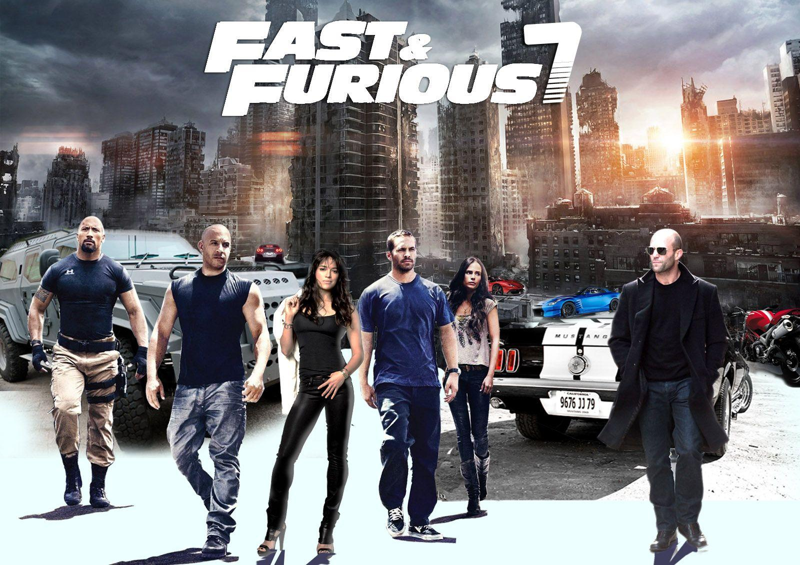
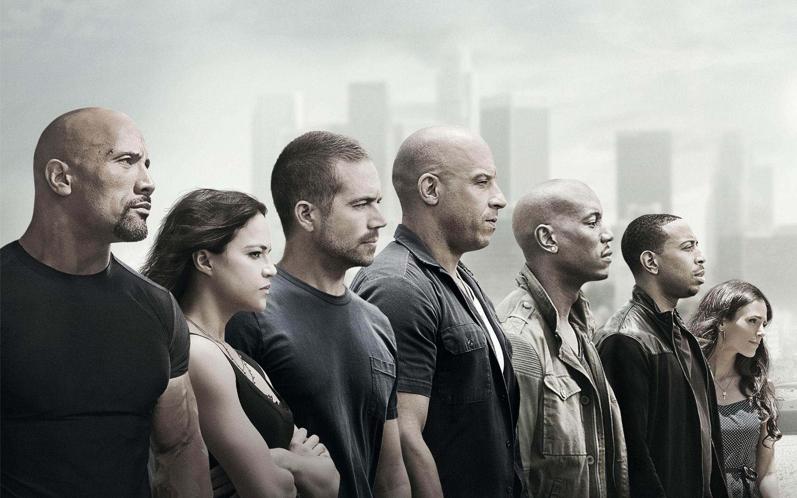
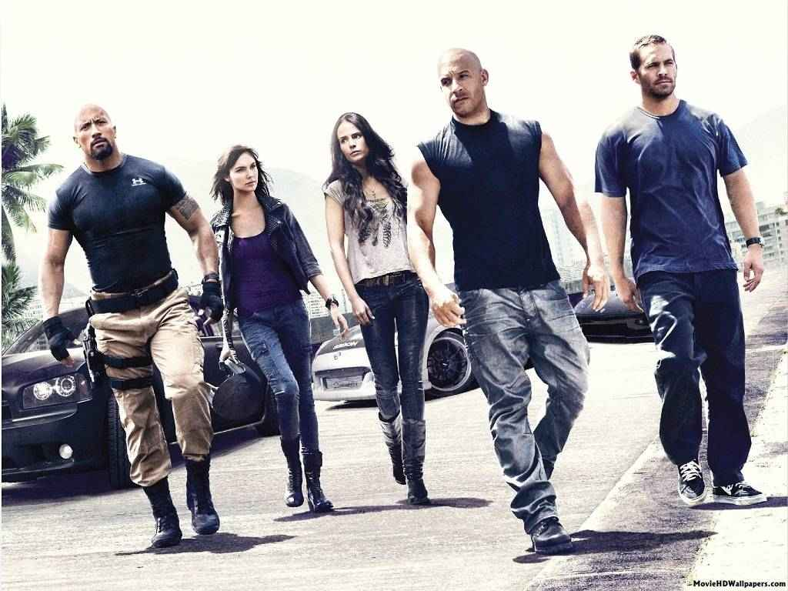
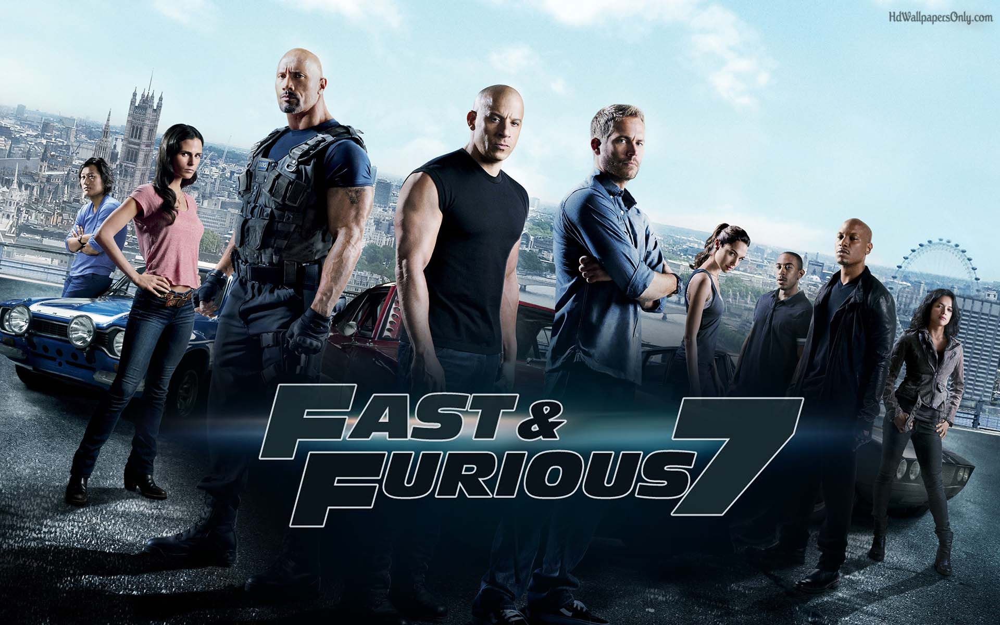
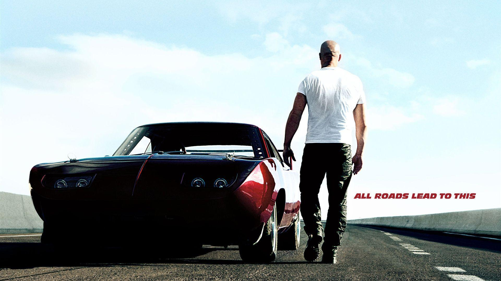
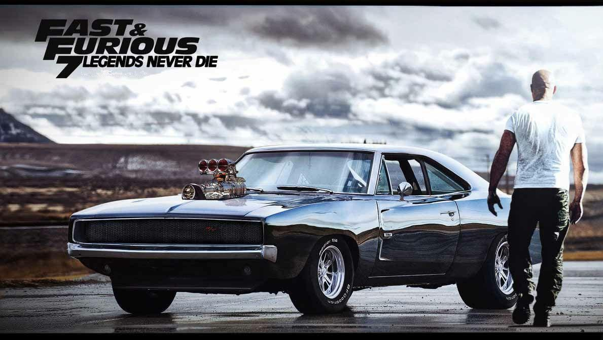

2015
James Wan
137 minutos
14 anos
Ação, aventura e corrida
Estados Unidos
Depois dos acontecimentos dos filmes anteriores, Dominic Toretto e sua equipe tentam voltar a ter uma vida mais tranquila. Porém, Deckard Shaw aparece em busca de vingança contra o grupo. Com isso, Dom, Brian e os outros integrantes precisam se unir novamente para enfrentar uma nova ameaça e proteger sua família. A história mistura ação, carros, perseguições e momentos de amizade entre os personagens.
Para conhecer mais informações sobre o filme, acesse: Velozes & Furiosos 7 na Wikipédia




